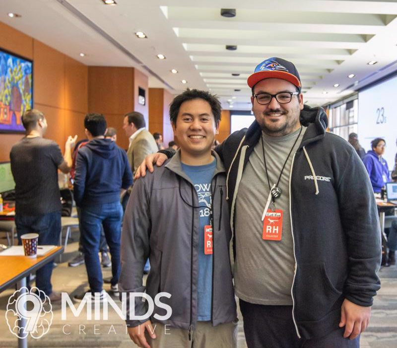

<!-- ======= Hero Section ======= -->
<section id="hero" class="d-flex flex-column justify-content-center align-items-center">
    <div class="container text-center text-md-left">
        <h1>The Association for Computing Machinery</h1>
        <h2>at UTSA</h2>
        <a href="#about" class="btn-get-started">Learn More</a>
    </div>
</section><!-- End Hero -->

<!--&lt;!&ndash; ======= About Section ======= &ndash;&gt;-->
<!--<section id="about" class="about">-->
<!--    <div class="container">-->

<!--        <div class="row">-->
<!--            <div class="col-xl-6 col-lg-7" data-aos="fade-right">-->
<!--                -->
<!--            </div>-->
<!--            <div class="col-xl-6 col-lg-5 pt-5 pt-lg-0">-->
<!--                <h3 data-aos="fade-up">About Us</h3>-->
<!--                <p data-aos="fade-up">-->
<!--                    The Association for Computing Machinery at UTSA is dedicated to giving members and students the-->
<!--                    opportunity to gain experience, network, socialize, learn, and grow outside of the classroom in-->
<!--                    all fields of technology and computing.-->
<!--                </p>-->
<!--                <div class="icon-box" data-aos="fade-up">-->
<!--                    <i class='bx bx-info-circle bx-tada'></i>-->
<!--                    <h4>Organization</h4>-->
<!--                    <p>Our chapter is organized to serve students for academic, professional, and social purposes at-->
<!--                        UTSA. The Chapter shall be involved with and conduct activities that are included below.</p>-->
<!--                </div>-->
<!--            </div>-->
<!--        </div>-->
<!--    </div>-->
<!--</section>&lt;!&ndash; End About Section &ndash;&gt;-->